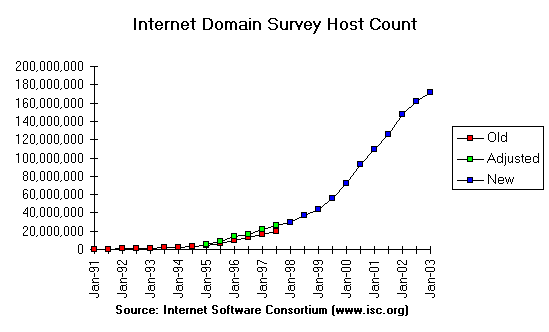

Christie Evans and Jonathan Pool
2003/03/23
Revised 2004/07/22
World trends in language-related technology
What is interlingual technology?
Fields of interlingual technology

Recent changes:

Current distribution:

Interlingual technology is technology which by design or effect promotes or facilitates communication that, in the absence of such technology, would be prevented or impaired by language diversity.
Prototypical purpose: Render A's production of content into language known by B so B can consume it without A or B learning any language not already known.
Obstacles to (automatic) translation:
Notions of translation automation:
Overlapping automation methods include:
These methods differ in whether translator attempts to "understand" the original.
Polysemy (see Smith, TMRL, 1989, 86-87): "Se vi estas esperantisto, vi devas paroli Esperanton." Translatable into English as:
Ambiguity (see Hutchins, MTTASPUP, 2002):
Ineffability?
Consensus: Nothing exists that approximates fully automatic high-quality translation of content of any kind about anything in any language into any other language.
Internet-based translation services: FreeTranslator. Examples:
| FreeTranslation | Les autorités ont encouragé du smog et le contrôle de la pollution. |
| BabelFish/SYSTRAN | Le brouillard enfumé et la lutte contre la pollution encouragés par autorités. |
| PROMT-Reverso | Les autorités ont encouragé le contrôle de pollution et le smog(le brouillard de pollution). |
| InterTran | Les autorités encourager smog et pollution le contrat. |
How to operationalize progress. Reduction in cost of high-quality translation?
Consensus: There is no basis for a forecast when, if ever, fully automatic high-quality translation of content of any kind about anything in any language into any other language will exist.
Prototypical purpose: Make an information system usable by anybody, so that the user experience is equivalent, regardless of the languages and conventions known and preferred by the user.
Why localization is hard:
Problem example: Can letter case be manipulated language-independently?
Localization notions:
Styles of localization:
Recommendations for localized software development: "Globalization Step-by-Step".
The Translation Project: "aims to get the maintainers of free software packages, benevolent translators, and users all together, so that computers and systems (like Linux or GNU) gradually become able to speak many languages." Results tabulated in Translation Matrix.
Example of an internationalized Web site
Unicode character pallette.
Unicode in 9 browsers.
Indicator of status quo: 10 firms pay for listings on a major search engine under the search string "multilingual Web site".
Is localization a norm? Is it increasingly a necessity?
The capability to display web sites in multiple languages is growing in importance every day. Two years ago almost the entire Internet spoke English as a first language. Today less than half the Internet speaks English as a first language. In another year this figure will be even less. If you were telephoning someone in another country, you would know that to communicate accurately you would have to speak their language. This same simple fact is true for all web sites. (http://www.c-prompt-dev.com/desc_webpage_services.asp#Internationalization)
Surveys show that Internet users are twice as likely to stay at a given site and three times as likely to make inquiries over the Internet if the content of the site is communicated in their own language. (http://www.globallisting.com/globallisting/showcase.html)
Motivation: Is it really profitable to market Jeep Cherokees in Cherokee?
Prototypical purpose: Give A competence in a language so A may produce and consume content in it, thereby avoiding translation.
Notions of language-learning technology:
Consensus: The application of information technology and artificial intelligence to language learning has not yet substantially improved the competence achievable per unit of investment in group instruction, but has substantially decreased the cost barriers to isolated, on-demand, and specialized language learning.
Web-based instructional support (Esperanto)
Web-based language learning (Esperanto)
I need, therefore I will?
Sleep learning? "Walk in, promenu out?"
Prototypical purpose: Design or modify a language so it promotes or facilitates communication that is prevented or impaired by language diversity.
Regularized novel synthetic human language.
Disambiguated version of existing human language.
Automated controlled content-elicitation system.
Translation interlinguas
Translation input media
Localization canonical representations
Learning appetizers
Learning objects
Controlled input progressing because of recognized value.
Use of designed human language for learning promotion may depend on ESF.